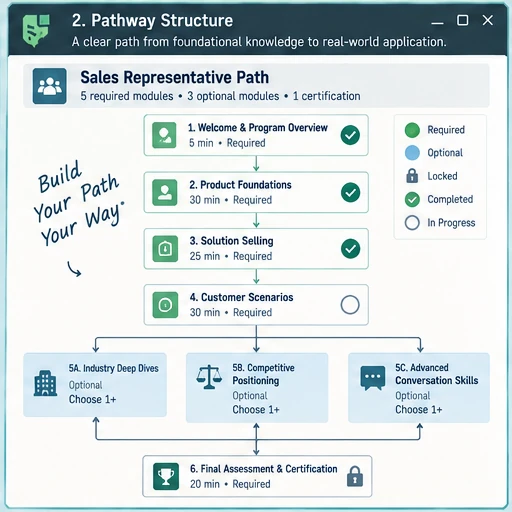

Audience, sales task, approved source content, existing learning, constraints, stakeholders, and success criteria.
Instructional Design / eLearning
Complete eLearning Pathways
I design connected eLearning when the work needs more than a single lesson: courses, certifications, assessments, LMS delivery, reporting, and ongoing updates.
Featured Project
Enterprise Sales Certification Pathway
A multi-course sales certification for internal sellers and channel partners.
I turned sales, product, and technical source material into a connected certification experience, wrote seller-focused objectives and assessments, coordinated review, tested the LMS experience, and supported reporting and ongoing updates.
Pathway Architecture

eLearning Lifecycle
From source material to launch and maintenance
Choose a stage to see the work I handle across a larger eLearning project.
Stage 1 / Analyze
Define the audience, seller task, source material, and scope.
I identify what learners need to explain, recognize, compare, or decide and separate that from technical detail or reference content that does not belong in the course.
Decide whether the need calls for a course, certification, supporting resource, or a smaller intervention.
A defined scope and learning target that can be used to design the experience.
Maintenance and learner evidence feed the next update.
Maintenance
Keep the learning editable after launch.
I organize source files, reusable components, review history, ownership, and version information so future content changes do not require rebuilding the pathway from scratch.
Keep Exploring